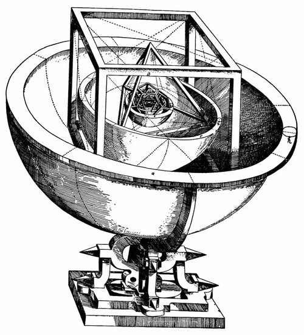
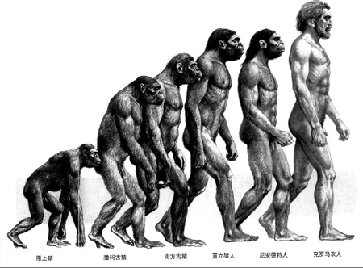
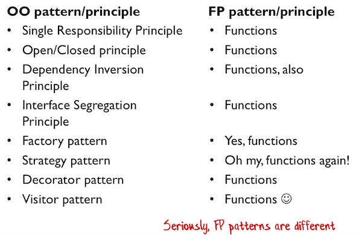

设计或者是一种解谜，世界就在眼前，然而它却是未知的，神秘的，我们试图通过分析建立一个普适的模型，去解构这个已经存在的世界。这个谜题如此引人入胜，它没有标准答案，却又真实的呈现在我们面前。设计就好像是研究电信号频谱结构的频谱分析仪，通过扫描和侦测信号，再利用我们已经充分证明的算法例如快速傅里叶变换（FFT）去获得频谱分布图，然后工程师就可以借助经验与频谱知识甄别信号特征，从而判断电子设备是否出现异常。这种设计方式，我称之为“分析式设计”。
分析式设计常常起源于对研究领域的假想与猜测，进而对海量的信息进行筛选和甄别，提炼出对解决该问题有帮助的信息，在利用设计经验去推导合理的设计模型。人类对于宇宙的探索，就是这样的分析式设计。在史蒂芬.霍金的著作《时间简史》[1]中谈到了古希腊哲学家亚里士多德对地球形状的论证。
早在公元前340年，希腊哲学家亚里士多德在他的《论天》一书中，就能够对于地球是一个圆球而不是一个平板这个信念提出两个有力的论证。第一，他意识到，月食是由于地球运行到太阳与月亮之间引起的。地球在月亮上的影子总是圆的，这只有在地球本身为球形的前提下才成立。如果地球是一块平坦的圆盘，除非月食总是发生在太阳正好位于这个圆盘中心的正下方的时刻，否则地球的影子就会被拉长而成为椭圆形。第二，希腊人从旅行中知道，在南方观测北极星，比在较北地区，北极星在天空中显得较低。
亚里士多德采用的两个论证就是他利用智慧与知识筛选出来的有用信息，这有利于他建立“地球是一个圆球”的天体模型。
这种分析式设计常常体现为一种渐进的设计方式，原因在于我们总是以局部去推测整体，就难免陷入一叶障目的困境。从亚里士多德到托勒密的设想，再到哥白尼的日心说，开普勒的天体模型，牛顿的万有引力定律，直至爱因斯坦的相对论，整体天体模型都在不断的批谬中披荆斩棘，艰难发展，并逐渐趋向事实的真理。然而无论正缪，这些哲学与思想先驱们都是在对静默存在的宇宙进行的一种分析，通过把握某种内在的如脉搏跳动的规律，设计为严谨的模型。

图：开普勒的天体模型
在软件领域，诸多问题已经现实存在，但这种存在如沙砾藏身于溪流，奇石隐匿于幽谷，没有敏锐的洞察力，很难明察问题的真相。设计者需要对繁杂纷乱的需求进行梳理和甄别，分析软件目标或愿景，逐步建立模型，并通过原型或真实实现去验证其模型，根据反馈的结果进行改进、打磨，或增或删，以求最简的方式满足需求，从而获得良好的解决方案去指导具体的实现。例如在大数据处理领域，我们面临的问题是数据的海量与性能之间的博弈，非结构性关系与分析结果之间隐藏的线索，还有诸如因果推论、分布式存储、实时处理等多个问题杂糅在一起，就构筑了一个复杂的外部世界。我们需要去深入探索数据分析的问题域，挖掘数据与数据之间的隐含关系，架构或重现各种复杂多变的应用场景，小心求证，实验探索，才能分析获得以当前场景而论为最优的解决方案，得出设计模型。
分析还可以逐步添加约束的方式来推导设计。Roy Thomas Fielding博士在推导REST架构风格时，正是采用了这种方式。在Fielding的论文《架构风格与基于网络的软件架构设计》[2]中，他写道：
Web架构背后的设计基本原理，能够被描述为由一组应用于架构中元素之上的约束组成的架构风格。当将每个约束添加到进化中的风格时，会产生一些影响。通过检查这些影响，我们就能够识别出Web的约束所导致的属性。然后就能够应用额外的约束来形成一种新的架构风格，这种风格能够更好地反映出现代Web架构所期待的属性。
Fielding从一个没有任何约束的“空”风格开始，通过逐步施加分离关注点、通信无状态、缓存、统一接口、分层、定制化等约束，整个架构就像洞穴中的原上猿逐步进化为人类一般，从“空”风格的混沌架构演化为最终的REST风格。相较于直接设计一个严谨的模型，这种逐步添加约束的方式更加自然流畅，更符合人类的知识积累模式。设计软件时，我们可以通过识别系统的风险，驱动我们去施加约束，然后渐进地形成针对性的解决方案，以降低风险。这即为George Fairbanks提出的风险驱动模型[3]。

图：人类的进化史
设计或者是一种创造，无中生有地将一个事物美轮美奂地创造出来。此时，设计者就像是造物主，他要设计的软件就是一个独立的星球，可以按照他认为最好的方式去设计星球的风景，安排万物遵循生长的秩序。即使是从无到有创造出一颗星球，依旧可以从亘古存在的遥远星球获得灵感，作为参考物或原型帮助新的设计。我将这种设计方式称为“创造式设计”，它考察的是设计者的经验、巧思与创意。
图：米开朗基罗名作《创世纪》局部：创造亚当
作家在写作时，整个构思的过程就是一种创造式设计。偶然经历的一件事情可能会在内心触动作家创作的神经，以此为灵感作为创造的契机，然后逐渐丰富，按照作品人物的性格、职业以及身处的环境开始推动情节的发展。这种创造未必是“硬”推出来的，相反，它可能极为自然流畅，如苏东坡云：“大略如行云流水，初无定质，但常行于所当行，常止于所不可不止，文理自然，姿态横生。[4]”
创造式设计虽为无中生有，但并非彻底的无，可能是一种发现。斯蒂芬.金在接受《纽约客》的一次采访时，说道[5]：
我对采访我的马克.辛格说，我相信故事犹如埋在地下的化石，是被人们发掘出来的，他说他不相信我的话。我回答说这没关系，只要他相信我这么相信就够了。我确实这么认为。故事不是纪念T恤衫或是掌上游戏机，它们是遗迹，属于一个未被发现但已经存在的世界。作家的工作就是利用他/她工具箱里的工具把每个故事尽量完好无损地从地里挖出来。有时候你发掘的化石很小，可能只是颗贝壳。有时候很巨大，是头骨架庞大牙齿凌厉的霸王龙。不论哪种，短篇小说或是一千多页的小说巨著，挖掘的技术大致上相同。
创造式的设计在一开始可能并不明确它所要创造的目标，而是像斯蒂芬.金的方式如发掘遗迹一般慢慢将泥土剔除，逐渐显现。这会让人产生不经意创造出来的感觉。Spring之父Rod Johnson从一开始就不是要创造一个框架，他是在J2EE项目中通过对EJB的反思逐步演化出来的Spring。这种创造其实是一种“循证式创造”，它遵循的是应用场景，而非不切实际的空想。
图：Rod Johnson的著作J2EE Development without EJB
2004年，当哥本哈根商学院的大三学生David Heinemeier Hansson（人称DHH）接到37signals公司电话时，不会有人想到这会是Ruby On Rails诞生的导火线。显然RoR并非DHH有意创造出来的，它只是为了打造Basecamp产品而自然而然衍生出来的框架。就连DHH创造用的工具也经历了变更，从最初选择的PHP，转向了更灵活、更简单的Ruby。正是Ruby对元数据编程的超强支持，Rails才能做到如此的精简。
创造式设计出来的产品常常凸显了设计者的意图与态度，就仿佛上帝的意志。这种态度彻头彻尾地体现了设计者的善恶论，甚至可以说是一种信仰。如果将设计者视为产品的上帝，则这种设计意图与态度就是一种自然法。正如中世纪的神学家阿奎那所说：“自然法已不再是最高的法，而且巧妙地将自然法与上帝的永恒法结合在一起，认为我们赖以辨别善恶的自然理性之光，即自然法，不外乎是神的荣光在我们身上留下的痕迹”。
在编程语言的设计中，尤其体现了这种意志与法规的结合。Go语言的设计者就对在面向对象领域中继承的滥用表达了足够的忧虑和担心。Rob Pike在《Go在谷歌：以软件工程为目的的语言设计[6]》提及Go语言设计者对类型结构的考虑：
类型层次结构这种模型会促成早期的过度设计，因为程序员要尽力对软件可能需要的各种可能的用法进行预测，不断地为了避免挂一漏万，不断的增加类型和抽象的层次。这种做法有点颠倒了，系统各个部分之间交互的方式本应该随着系统的发展而做出相应的改变，而不应该在一开始就固定下来。
因而，在Go语言中并未提供继承的特性，而是利用接口（包括对Duke Type的支持）来支持OO中的多态，而以组合来保证逻辑的复用。
设计态度甚至体现为设计者对所要创造的世界所持有的世界观。面向对象与函数编程阵营就是两种截然不同的世界观。面向对象是名词的世界，而函数式的思想则以动词为准，从而将函数提升为一等公民。观察世界的角度不同，设计的途径也就不同。OO的模式与原则在函数式语言中，几乎都可以用函数来表示。Scott Wlaschin在演讲Functional Design Patterns中比较了这两种不同的编程范式：

图：OO和FP的模式与原则
无论是分析式设计，还是创造式设计，目的都是为了要解决问题，即针对问题域（Problem Domain）寻求解决方案（Solution）。问题域可大可小，设计可复杂可简单。设计者往往难以一蹴而就获得最佳的解决方案，而需要在不断的演化中改进设计。2004年，Martin Fowler撰写文章《Is Design Dead》[7]，将设计划分为计划式设计和演进式设计（Planned and Evolutionary Design）。我认为，这二种设计方式都需要遵循设计的基本原则，区别只在于设计的目标。演进的设计提倡满足客户现有的需求；而计划的设计则需要考虑未来的功能扩展。演进的设计推崇尽快地实现，追求快速确定解决方案，快速编码以及快速实现；而计划的设计则需要考虑计划的周密性，架构的完整性并保证开发过程的有条不紊。
Neal Ford提出的Emergent Design实则就是一种演进式设计，在他撰写的系列文章中，开篇就提出：“演化架构(evolutionary architecture)和紧急设计(emergent design)都是将重要的决策推迟到最后责任时刻（Last Responsible Moment）的敏捷技术”。他建议，通过工具获得质量指标，并利用测试驱动设计追求简单设计，进而对设计进行重构，在重构过程中积累惯用模式来指导重构的方向，从而完成架构的演进[8]。
George Fairbanks认为除了计划式设计和演进式设计之外，还包含第三种设计方式，称之为最小计划式设计（Minimal planned design），或可称为是中庸之道的选择。书中认为，“演进式设计需要与一些敏捷实践配合，包括重构、测试驱动设计与持续集成。而计划式设计背后隐藏的思想是在构造开始之前，制订的计划可以设计出很好的细节。”[3]至于最小计划式设计，则介乎于演进式设计与计划式设计之间。支持这种设计的人认为：如果完全采取演进式设计，可能会使得设计走向死胡同；而计划式设计又非常难，因为事先对系统并没有全面的了解，可能导致设计错误。在2002年Bill Venners对Martin Fowler的采访中，Martin Fowler认为，最合理的分配是20%的计划式设计，80%的演进式设计。George认为需要权衡计划式与演进式设计。一种做法是在项目初期进行计划式设计，确保架构能够处理最大的风险。之后，就可以通过局部的设计来应对需求的变化，或者采用演进式设计，通过推行重构、测试驱动设计与持续集成对架构进行演化。
图：George Fairbanks的著作《恰如其分的软件架构》
整体而言，这三种方式的设计各有优劣，我们应根据具体的场景，具体的项目，具体的团队进行针对性地分析。应该把握“因地制宜”的原则，认识到不同的项目需要不同的设计方式。对于不同的开发团队，做出的选择也会不同。例如，如果开发团队精于重构、测试驱动设计，并能很好地实施持续集成，就可以考虑采用演进式设计或最小计划设计。
显然，无论采取何种设计方式，我们都应该追求恰如其分，而非臻至完美。设计之美需要以演进的方式逐渐打磨而成，它需要保持简单，避免重复，拥抱变化。故而要保证设计的清晰意图表达，干脆利落，善于留白来保证虚实相间，简约平衡，寻求整体的美感。
参考文献
[1]史蒂芬.霍金:《时间简史》
[2]Roy Thomas Fielding: 《架构风格与基于网络的软件架构设计》
[3]George Fairbanks: 《恰如其分的软件架构》
[4]苏轼：《答谢民师书》
[5]斯蒂芬.金: 《写作这回事——写作生涯回忆录》
[6]Rob Pike: Go在谷歌：以软件工程为目的的语言设计
[7]Neal Ford: 《Is Design Dead?》
[8]Neal Ford: Evolutionary architecture and emergent design